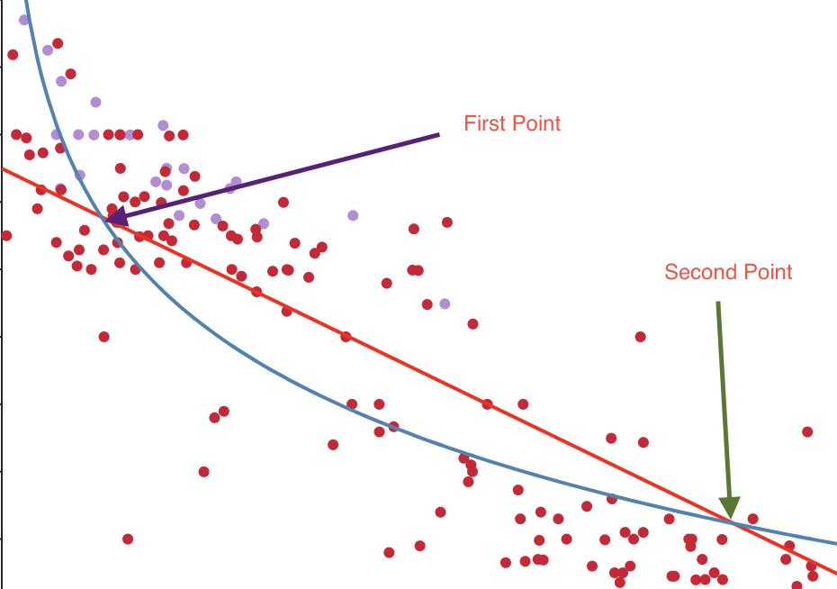

There is always a rule when it comes to buying a next car. Do not ever buy a new car. Always buy a pre-owned car. The reason why people want to avoid purchasing new cars is to avoid the depreciation of the vehicle. However, it is hard to tell by just explaining it. In this tutorial, there will be explaining how depreciation works and how some cars have slower depreciation rate than other cars. To demonstrate how depreciation works on certain cars, we will be using two models, BMW M3 and M5.
Before starting, it will be great if we can collect data first. We will be collecting data for each BMW M3 and M5 that's currently available on the market. For example, some websites show miles and price for all BMW M3 and M5. By collecting all the information, we can see how the market behaves for those specific vehicles.
| Model | Miles | Price | Total Loss | Percent Loss | |
|---|---|---|---|---|---|
| BMW M3 | 5572 | $59,745 | |||
| BMW M3 | 11664 | $51,990 | -$7,755 | -12.9% | BMW M5 | 5485 | $92,594 |
| BMW M5 | 10341 | $79,997 | -$12,597 | -13.6% |
*Please move the cursor to circles to see more details
*Please move the cursor to circles to see more details
As mentioned in chapter 1 about the depreciation, car value depreciate in faster rate in the beginning of usage and slows in depreciation rate as you drive more. Let's draw this depreciation line along with the straight line we drawn before in chapter 2. If you check the graph above, there are two lines that's been drawn. Red line is the straight line that we mentioned as a linear regression model. The blue line is a depreciation line. If you look at the depreciation line, we notices that, in the beginning, the line goes straight down. A lot more slope than any other miles. This shows how the depreciation rate is at highest for brand new cars.
If you go towards 60,000 miles mark on the graph, you notice that the depreication line starts to become linear and less slope. This tells us that the depreciation rate slows down as the car gets driven in a long term period. So the real question is how these two lines combined together in one graph can bring insight to us?
Please remember that these insights are just general theory. There is no evidenence that supports these theories or hypothesis. These are the below insights that AIFA believes. AIFA will talk two different perspectives, consumer and seller.
Consumer Insights
-
[Consumer] Avoid Early Depreciation
The first point is where depreciation line and straight line meets. That is when depreciation rate starts to slow down. This meams that the vehicle passed the huge depreciation rate phase. For example, BMW M5 biggest depreciation rate stops at 9000 miles with price around 88,000 dollars. This tells us that if you are interested in buying pre-owned cars, the best mileage will be to buy BMW M5, in this case, at 9000 miles.
-
[Consumer] Avoid any depreciation
Second point is where depreciation line draws becomes linear and draws above the straight line, this is where consumer will be interested in buying a car that has low mileage but could also avoid hard depreciation rate.
Seller Insights
-
[Seller] More buyers at first point
As a seller, the car already tanked the depreciation and lost the money. It's too late as a seller to recover the money that it losts from early depreciation. At first point, that's when seller can sell their cars since that's where most buyers are looking forward to. It will be easy to sell the car at that first point's price and miles. Also if you already owned the vehicle before the first point, please try to sell before the first point meets or passes to avoid losing money from depreication as much as possible.
-
[Seller] Avoid maintenance cost
Once the second point comes across, the vehicle pretty much is considered used and going through a phase where things are going to break. There is a reason why the depreciation rate slowed down and becomes linear starting at that the second point.
Combined Both Buyer and Seller Insights
- As a buyer, you can buy the vehicle at first point and sell the vehicle at second point. This way, you are avoidiing the early sharp depreciation rate and sell the vehicle before maintenance becomes a problem.
We see that there are different insights from different perspective from buyers and sellers. But one graph can bring multiple insights and it's pretty much up to the user to decide which sounds better for him or her.